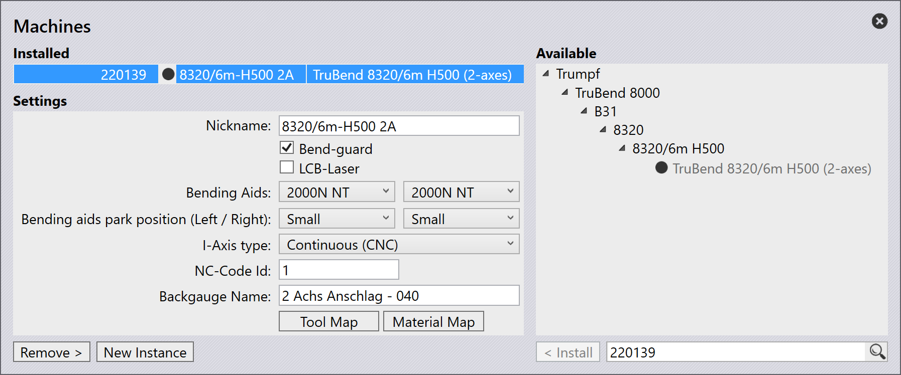

Ayudas de plegado
Las Ayudas de plegado son componentes de máquinas prensas plegadoras que ayudan a plegar chapas metálicas más gruesas. Están diseñadas para proporcionar soporte y control adicional durante el proceso de plegado, asegurando resultados precisos y consistentes.
Una prensa plegadora puede tener múltiples ayudas de plegado o una sola ayuda de plegado instalada, dependiendo de los requisitos específicos de la operación de plegado.
| Las ayudas de plegado son aplicables solo para las series TruBend 5000 y 8000. |

Configuración de Ayudas de plegado
Las Ayudas de plegado se pueden configurar en Database / Machines / Settings.

Cuando se importa una pieza y se selecciona una máquina con ayudas de plegado, TecZone Bend configura automáticamente las ayudas de plegado según los requisitos de la pieza.
Uso de Ayudas de plegado
Una vez que se genera una solución de plegado factible, las ayudas de plegado se pueden ajustar aún más para optimizar el proceso de plegado.
Haga clic directamente en la ayuda de plegado en TecZone Bend para abrir el panel Bend Aid. El número en el panel de ayuda de plegado representa la secuencia de plegado.
![][Bending Aid Panel](img/bendaidpanel.png)
-
Index - Denota la ayuda de plegado seleccionada actualmente.
-
Position (Z,R) - Se utiliza para ajustar la posición de la ayuda de plegado a lo largo de los ejes Z y R.
-
Enabled - Seleccione esta casilla de verificación para activar la ayuda de plegado.
-
Auto-Place - Se utiliza para posicionar automáticamente la ayuda de plegado según la geometría de la pieza.
Speed:
-
Down - Se utiliza para ajustar la velocidad de retracción de la ayuda de plegado después de la operación de plegado.
-
Set All Bends - Se utiliza para aplicar la configuración de velocidad actual a todos los pliegues en la secuencia.
Advanced:
-
Method - Se utiliza para definir el modo operativo de la ayuda de plegado. Las opciones incluyen:
-
Default - Restablece la configuración de la ayuda de plegado a los valores predeterminados.
-
Return at UDP - Configura la ayuda de plegado para que regrese a una posición definida por el usuario después de cada pliegue.
-
Tilt product - Permite que la ayuda de plegado incline la pieza durante el proceso de plegado para una mejor alineación.
-
Static angle - Permite establecer un ángulo fijo para la ayuda de plegado durante la operación.
-
-
Stop angle - Se utiliza para establecer el ángulo en el que la ayuda de plegado se detendrá durante la operación.
Posición de estacionamiento de Ayudas de plegado
Las Ayudas de plegado se pueden estacionar en una posición designada cuando no están en uso. Esto ayuda a optimizar el espacio de trabajo y garantiza la seguridad durante la operación. Esto también previene colisiones con otros componentes de la máquina.
Las Ayudas de plegado se pueden estacionar en las siguientes posiciones:
-
Default - Las ayudas de plegado se pueden estacionar hasta la longitud de la mesa.
-
Small - Las ayudas de plegado se pueden colocar 700 mm más allá de la longitud de la mesa.
-
Large - Las ayudas de plegado se pueden colocar 1200 mm más allá de la longitud de la mesa.

Para máquinas tandem, hay cuatro ayudas de plegado disponibles. Para máquinas tándem izquierdas, solo se permite el estacionamiento del lado izquierdo. Para máquinas tándem derechas, solo se permite el estacionamiento del lado derecho.
|
La opción de posición de estacionamiento se mostrará solo para las series TruBend 8000 y máquinas VarioPress. Para máquinas tándem B36, la posición de estacionamiento small no es aplicable. |
Creación de ayudas de plegado personalizadas
Para crear ayudas de plegado personalizadas en TecZone Bend, primero debe crear un archivo ini que defina los parámetros de la ayuda de plegado y archivos mesh para los componentes de la ayuda de plegado (Carriage, Table y Plate).
[BAData]
; The user defined name of the BendAid. Only used for custom bend aids
Name=BATest
; The range of V-widths the bend aid can support
DieV=16,250
; The range of die-heights the bend aid can support
DieHeight=-30,250
; Maximum angle, in degrees
MaxAngle=55
; Lift capacity, in kg
Payload=300
; Maximum lift speed, in degrees/second
Speed=45
; When the bending aid is at X=0, this is the bound of the support table in top view
Table=-159,-1032,159,-245.6
; The X-Span of the bending aid (when positioned at 0)
XExtent=-213,213
; Tells whether the user can change the forward speed
CanChangeForwardSpeed=False
; Tells whether safety stop angle is possible in the machine
CanStopAtReturn=True
; Can the bending aid movement be varied using different methods?
AdvancedControl=True
; What type of existing bending aid can this be mapped to? Used only by custom bend aids
EType=TB8000_2000N_B36
[Carriage]
Model=Carriage.mesh
Stroke=-1000,1000
Color=White
Shift=0,0,100
[Table]
Model=Table.Mesh
Stroke=50,200
Color=White
[Plate]
Model=Plate.mesh
Stroke=0,56
Color=#4A4A4AColoque el archivo ini y los archivos mesh correspondientes en una carpeta que luego se pueda importar en TecZone Bend.
Importación de ayudas de plegado personalizadas
Para importar ayudas de plegado personalizadas:
-
Navegue a File / Import / Bending Aids… y seleccione el archivo ini ya creado (asegúrese de que los archivos mesh correspondientes estén en la misma carpeta).
-
Las ayudas de plegado importadas estarán disponibles en el menú desplegable de selección de ayudas de plegado en la configuración de la máquina.

Esta opción es útil cuando una ayuda de plegado necesita personalizarse para tareas de plegado específicas o cuando se utilizan ayudas de plegado especializadas no incluidas en la base de datos predeterminada de TecZone Bend.